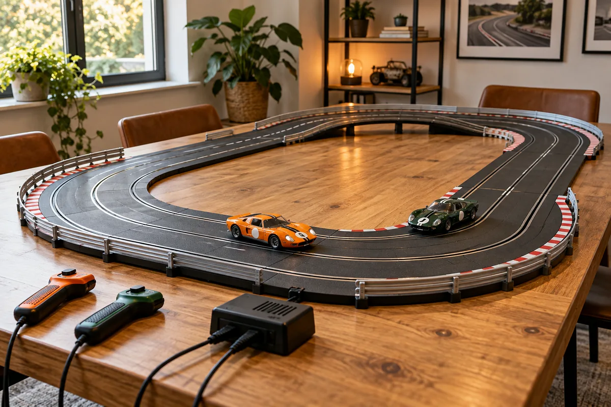
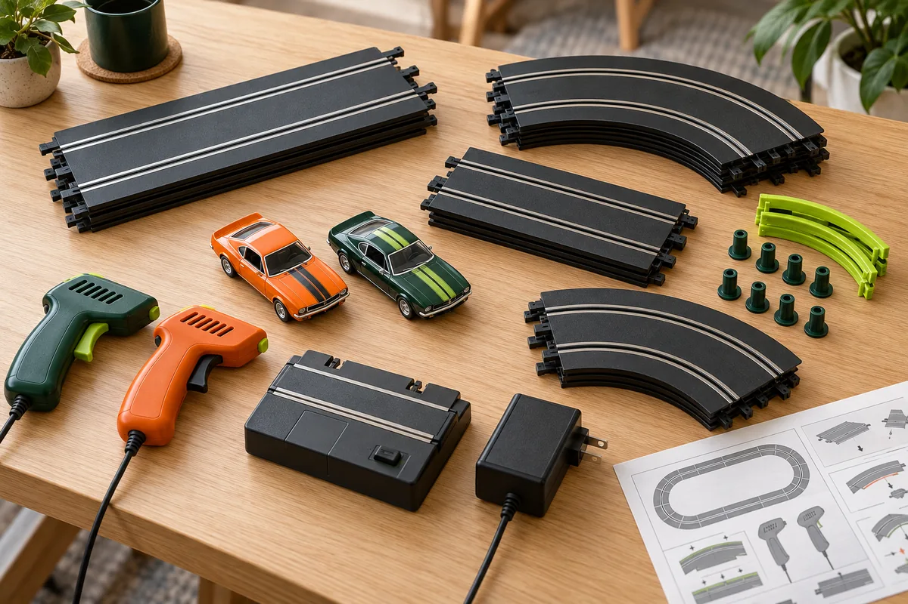
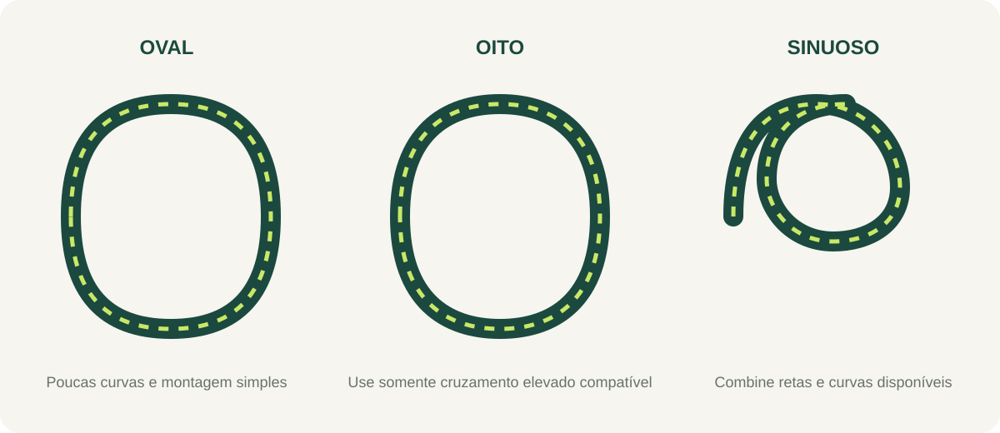
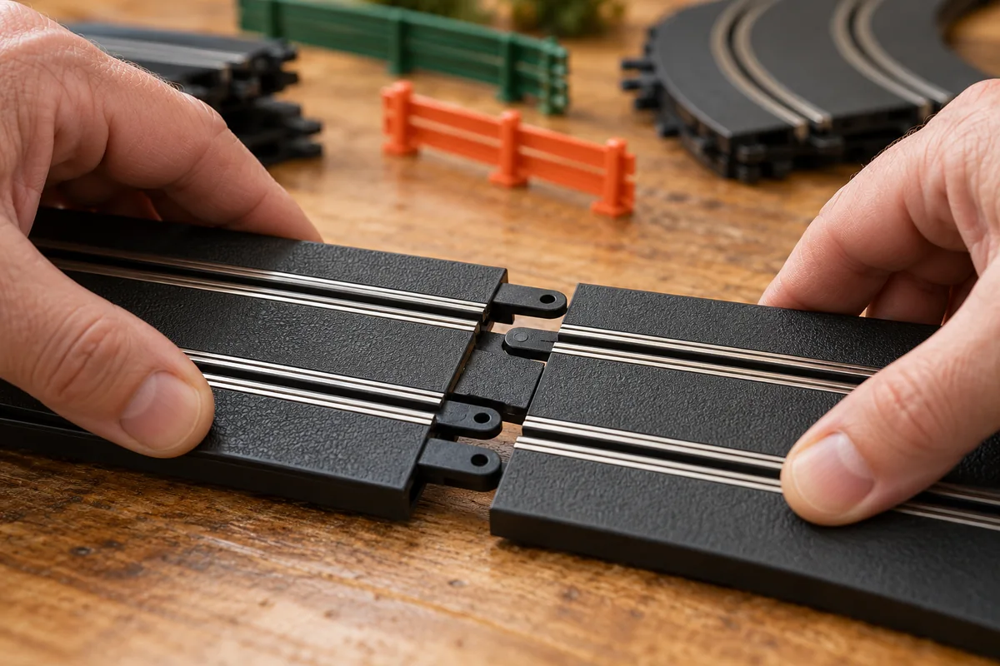
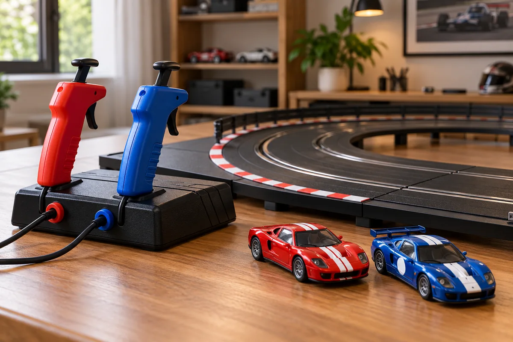
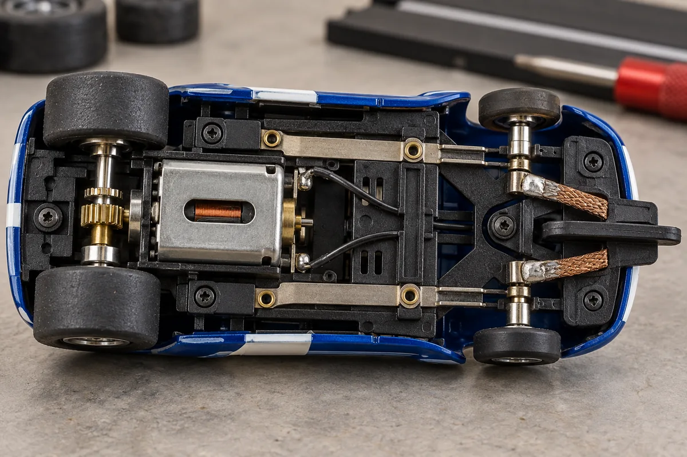
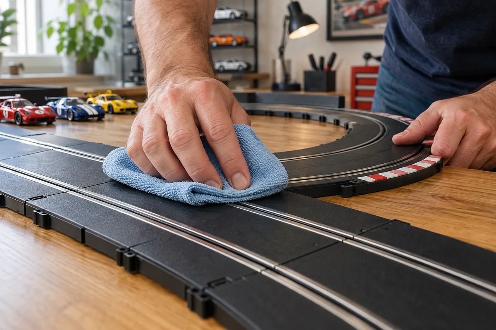
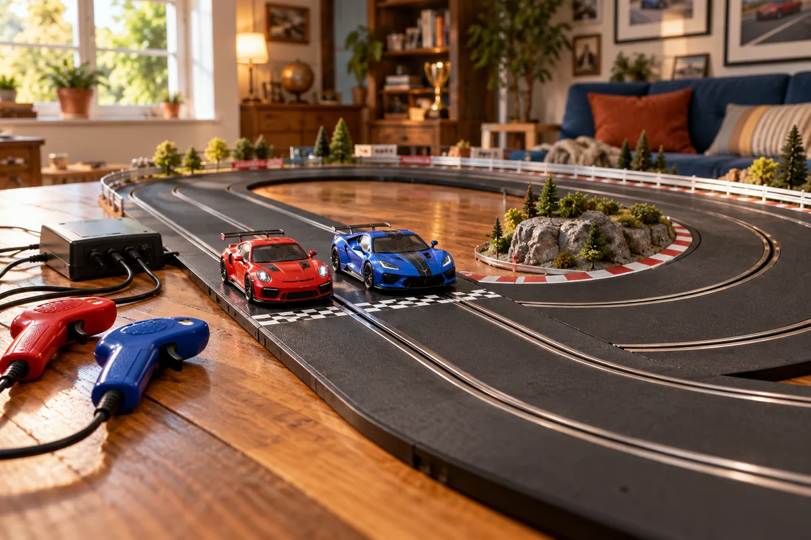

Montar um autorama pela primeira vez fica mais simples quando você separa as peças, planeja o espaço e segue o manual do conjunto. Kits diferentes podem usar conectores, escalas, bases e fontes de alimentação incompatíveis entre si; por isso, trate as instruções do fabricante como referência principal.
1. Confira o que veio no kit
Abra a caixa sobre uma superfície ampla e compare as peças com a lista do manual. Um conjunto pode incluir trechos retos e curvos, carrinhos, manetes, uma base de conexão, fonte de alimentação e instruções. A composição varia. Identifique cada parte antes de encaixar qualquer trilho.

Se pretende ampliar a pista, confirme no manual ou com o fabricante quais extensões são compatíveis. Não presuma que trilhos de marcas, gerações ou escalas diferentes se conectem corretamente.
2. Escolha o espaço e planeje o traçado
Prefira uma mesa ou piso nivelado, firme e com espaço para alcançar todo o circuito. Deixe uma margem livre ao redor para recuperar os carrinhos que saírem da pista e posicionar os controles sem puxar os cabos. Evite áreas de passagem, superfícies instáveis e locais onde líquidos possam atingir o conjunto.
Comece por um formato simples usando apenas as peças disponíveis. O diagrama abaixo é ilustrativo: as curvas e conexões do seu kit determinam o que pode ser montado. Um circuito em oito só deve ser feito com a peça de cruzamento ou elevação apropriada ao sistema.

3. Encaixe as peças sem forçar
Disponha primeiro todas as partes no formato escolhido, ainda sem ligar a alimentação. Siga a ordem de montagem indicada pelo fabricante e confira se as extremidades correspondentes estão alinhadas. Pressione os conectores com cuidado, sem torcer a pista nem forçar encaixes que ofereçam resistência.

Quando terminar, percorra o circuito com os olhos e verifique se as juntas estão niveladas e firmes. Uma conexão desalinhada pode interromper a passagem do carrinho ou criar um ponto de saída.
4. Conecte os controles e faça um teste
Com a pista montada, identifique a base e os conectores indicados no manual. Use somente a fonte de alimentação compatível fornecida ou recomendada pelo fabricante. Faça as conexões na ordem descrita para o seu modelo e não improvise adaptações elétricas. Mantenha mãos e líquidos longe dos conectores.

Coloque cada carrinho na sua própria canaleta, encaixando a guia conforme as instruções. Comece com acionamentos curtos e suaves para conhecer a resposta do controle. Se algo não funcionar, desligue e desconecte a alimentação antes de inspecionar juntas ou reposicionar o carrinho.
O que observar no carrinho
Em muitos modelos, a guia acompanha a canaleta e contatos metálicos encostam nos trilhos para conduzir energia. Pneus, guias e contatos variam entre carrinhos; consulte o manual antes de ajustá-los ou removê-los.

Se o carrinho não responder
Desligue a fonte antes de mexer. Confira se a base e os manetes estão conectados como o manual indica e se as peças de pista se unem sem folga. Reposicione o carrinho e confira visualmente se a guia está na canaleta. Limpe contatos apenas pelo método recomendado para o modelo. Se outro carro funcionar no mesmo trecho, isso não prova que o primeiro esteja danificado; pode haver diferenças de contato ou compatibilidade. Não abra motores nem faça adaptações elétricas. Se o problema continuar, pare o teste e consulte o suporte do fabricante.
5. Faça a limpeza e guarde corretamente
Antes de limpar ou tocar nos contatos, desligue o sistema e desconecte a fonte da tomada. Remova poeira da pista com pano macio e seco; se o fabricante permitir pano levemente umedecido, deixe a superfície secar completamente antes de religar. Evite abrasivos, solventes e sprays sem autorização expressa do manual.

Observe se há poeira ou fibras nos contatos dos carrinhos. Alguns fabricantes recomendam escova macia para limpar as malhas de contato; a forma de cuidar dos pneus e das peças também depende do modelo. Não desmonte o carrinho se isso puder afetar a garantia.
Pronto para a primeira corrida
Uma pista firme, juntas bem encaixadas e conexões feitas conforme o manual formam um bom começo. Após o teste, desligue e guarde os componentes protegidos de poeira, calor e umidade. Com a experiência, você pode experimentar outros formatos usando peças confirmadas como compatíveis.

Fontes consultadas
- Scalextric — montagem e primeiros passos da pista
- Scalextric — manutenção de carrinhos
- Scalextric — dicas de limpeza e corrida
As orientações gerais deste guia não substituem as instruções específicas de cada fabricante e modelo.